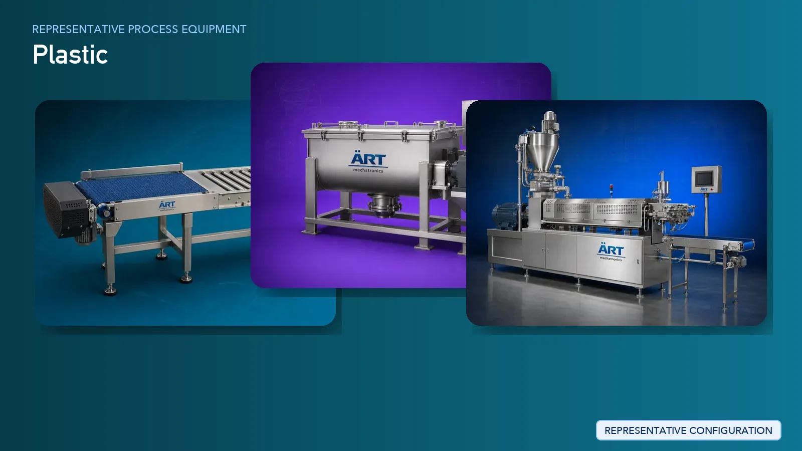

Plastic Products Manufacturing Plant & Machinery Solutions (Injection, Extrusion & Blow Molding Systems)
Plastic product manufacturing is a major industrial sector producing a wide range of products such as plastic containers, bottles, pipes, fittings, films, sheets, household items, industrial components, and PVC products.

About Plastic processing
The manufacturing process involves melting of polymer raw materials, precise molding or extrusion, cooling, finishing, and packaging to achieve high-quality and consistent output.
ART Mechatronics provides complete turnkey solutions for plastic manufacturing plants, offering advanced systems for extrusion, injection molding, blow molding, and finishing. Our solutions are designed for high-efficiency production, precision output, and scalable industrial operations for domestic and global markets.
Complete Plastic Manufacturing Process Flow
Plastic resins (granules/pellets) such as PE, PP, PVC, PET are fed into the system.
Ensures continuous and controlled feeding.
Additives such as color masterbatch, stabilizers, and fillers are mixed.
Ensures:
- Uniform material properties
- Desired product characteristics
Primary Manufacturing Methods
- A. INJECTION MOLDING (MOST COMMON)
Process: Melting → Injection → Cooling → Ejection Machines Used:
- Injection Molding Machine
- Mold (Tooling)
Produces:
- Household items
- Industrial components
- Plastic caps
- B. EXTRUSION (CONTINUOUS PROCESS)
Process: Melting → Shaping → Cooling → Cutting Machines Used:
- Plastic Extruder
- Die Head
- Cooling Tank
- Cutter
Produces:
- Pipes
- Sheets
- Films
- C. BLOW MOLDING
Process: Melting → Blow forming → Cooling Machines Used:
- Blow Molding Machine
Produces:
- Bottles
- Containers
- D. PVC PIPE & PROFILE MANUFACTURING
Process: Compounding → Extrusion → Cooling → Cutting Machines Used:
- PVC Extrusion Line
- Calibration Tank
- Haul-Off Unit
- Cutter
Produces:
- PVC pipes
- Profiles
Excess material is removed.
Rejected material is recycled.
Final inspection ensures dimensional accuracy and quality.
Finished products are packed for dispatch.
Machinery Required for Plastic Manufacturing Plant
- Hopper Loader / Material Handling System
- Mixer / High-Speed Mixer
- Compounding Extruder
- Injection Molding Machine
- Plastic Extruder
- Blow Molding Machine
- PVC Pipe Extrusion Line
- Cooling Tank / Chiller
- Cutter / Haul-Off Unit
- Grinder / Regrinder
- Packaging Machines
Turnkey Plastic Manufacturing Solutions
ART Mechatronics offers complete turnkey solutions for plastic product manufacturing plants, including:
- Process design & plant layout
- Injection, extrusion, and blow molding systems
- Cooling and finishing systems
- Automation & control panels
- Tooling and mold integration
- Installation & commissioning
- After-sales support
We customize solutions based on:
- Product type (pipes, bottles, components)
- Production capacity
- Automation level
- Material type (PVC, PP, PE, PET)
Why Choose Art Mechatronics
- Expertise in plastic and polymer processing systems
- High-precision molding and extrusion technology
- Energy-efficient production systems
- Consistent product quality
- Scalable industrial solutions
- Global export capability
Machinery in a Plastic plant
Where it's used
Get pricing & specs for the Plastic plant
Share the product, target capacity, current process and plant location. These details help our engineers discuss the right machine or line configuration.
One partner, from design to start-up
ART Mechatronics designs, manufactures, installs and commissions your Plastic solution with regional presence in India, UAE and Thailand.